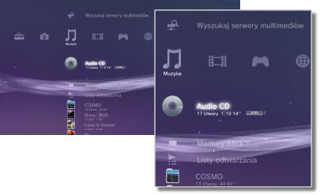

Muzyka > Kategoria Muzyka
Kategoria Muzyka
W kategorii  (Muzyka) wyświetlane są następujące ikony. Wyświetlane ikony różnią się w zależności od warunków użytkowania.
(Muzyka) wyświetlane są następujące ikony. Wyświetlane ikony różnią się w zależności od warunków użytkowania.

 |
(Title name) | Wyświetlenie miniaturowego panelu sterowania. Ta ikona jest wyświetlana tylko podczas odtwarzania muzyki. |
|---|---|---|
 |
Wyszukaj serwery multimediów | Inicjowanie wyszukiwania serwerów multimedialnych DLNA podłączonych do lokalnej sieci. |
 |
Serwer multimediów | Nawiązywanie połączenia z serwerami multimedialnymi DLNA i odtwarzanie utworów muzycznych, które się na nich znajdują. Wyświetlane ikony różnią się w zależności od typu serwera. |
 |
(Tytuł) | Odtwarzanie płyty Super Audio CD. |
 |
(Tytuł płyty CD) | Odtwarzanie płyty audio CD. |
 |
Dysk z danymi | Odtwarzanie plików muzycznych zapisanych na obsługiwanym nośniku z możliwością nagrywania, takim jak płyta CD-R lub DVD-R. |
|
Dysk DSD | Odtwarzanie plików muzycznych w formacie DSD zapisanych na obsługiwanym nośniku, takim jak płyta DVD-R. |
 |
Memory Stick™ | Odtwarzanie plików muzycznych zapisanych na karcie pamięci Memory Stick™.* |
 |
SD Memory Card | Odtwarzanie plików muzycznych zapisanych na karcie pamięci SD Memory Card.* |
 |
CompactFlash® | Odtwarzanie plików muzycznych zapisanych na karcie pamięci CompactFlash®.* |
 |
PSP™ (PlayStation®Portable) | Umożliwia odtwarzanie plików muzycznych zapisanych na karcie pamięci Memory Stick™ w konsoli PSP™. |
 |
PSP™ (PlayStation®Portable) | Umożliwia odtwarzanie plików muzycznych zapisanych w pamięci konsoli PSP™go. |
 |
Cyfrowy aparat fotograficzny | Odtwarzanie plików muzycznych zapisanych w pamięci aparatu cyfrowego. |
 |
WALKMAN®/ATRAC Audio Device (WALKMAN®) | Umożliwia odtwarzanie plików muzycznych zapisanych na urządzeniu WALKMAN®/ATRAC Audio Device (WALKMAN®). |
 |
ATRAC Audio Device | Umożliwia odtwarzanie plików muzycznych zapisanych na urządzeniu ATRAC Audio Device. |
 |
Urządzenie USB | Odtwarzanie plików muzycznych zapisanych w urządzeniu pamięci masowej USB. |
 |
Listy odtwarzania | Umożliwia tworzenie list odtwarzania, a także edytowanie i odtwarzanie list już utworzonych. |
 |
(folder) | Ta ikona jest wyświetlana w przypadku folderów, które zostały utworzone na nośniku pamięci przy użyciu komputera. |
 |
(pliki zapisane w pamięci masowej systemu) | Odtwarzanie plików muzycznych zapisanych w pamięci masowej systemu PS3™. Jeśli dostępne są obrazy, wyświetlane są miniatury. |
| * |
W przypadku niektórych modeli konsoli PS3™ do korzystania z nośników pamięci wymagana jest odpowiednia przejściówka USB (nie dołączona do zestawu). W przypadku korzystania z przejściówki USB nośnik pamięci jest wyświetlany jako urządzenie |
|---|
 (Urządzenie USB).
(Urządzenie USB).Wskazówki
- Szczegółowe informacje o standardzie DLNA można znaleźć w temacie
 (Ustawienia) >
(Ustawienia) >  (Ustawienia sieci) > [Połączenie z serwerem multimediów] w niniejszej instrukcji.
(Ustawienia sieci) > [Połączenie z serwerem multimediów] w niniejszej instrukcji. - W rzadkich przypadkach płyty lub inne nośniki odtwarzane w konsoli PS3™ mogą nie działać prawidłowo. Jest to przeważnie spowodowane różnicami w procesie produkcyjnym lub kodowaniu oprogramowania.
- Gdy sygnał dźwięku z płyt Super Audio CD jest wysyłany ze złącza DIGITAL OUT (OPTICAL), zachodzi proste odtwarzanie (z zastosowaniem częstotliwości 44,1 kHz i 16-bitowych próbek).
Informacja
Na niektórych konsolach PS3™ nie można odtwarzać płyt Super Audio CD. Szczegółowe informacje można znaleźć w temacie [Rodzaje odtwarzanych płyt].